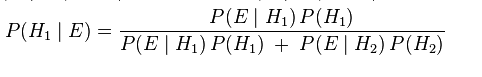

Matemáticas Bayesianas Para Dummies
Preliminares..
No diría la intuición sino la apariencia, el primer vistazo. Sí, porque incluso el primer vistazo se entrena, y la observación eficiente, son procesos que la gente tiene de difícil quitar y poner. Es una clasificación errónea realmente separarlas y/o dar por hecho que son, por ejemplo, funciones paralelas o modos de trabajo que en un momento activamos, o no activamos del todo porque asumimos que son habilidades que quizá podemos no tener. Y dejamos la observación eficiente para los matemáticos. Y que sean otros los que se vean con elaborar maneras de tomar nota de lo que sucede, contar frecuencias, cruzar registros y establecer correlaciones entre hechos que fueren más sistemáticos y nos lleven a obtener conjeturas más precisas.
Pero siempre hay un primer vistazo, luego un proceso que avanza hacia una mejor discriminación y una contrastación entre sombras y lugares comunes hasta que obtenemos la diferencia que discrimina una correlación de otra. Aquí cae, creo yo el punto en el que desvariamos. A unos les sirve para separar funciones pretendiendo que por separado se especializan, aunque no lo hacen. En vez de considerarlas continuidad de un mismo proceso en la figuración. El simple primer vistazo de los sucesivos. Por supuesto, cuando me refiero a las fases sucesivas al primer vistazo me refiero a leer dos veces el problema, cruzar probables factores, repetir la observación incluyendo variables comunes desapercibidas a primera vista y, en fin todo ese cuidadoso ritual del que matemáticos y estadísticos hacen su oficio.
Y, como cualquiera puede comprobar, pasado un tiempo que suele ser bastante breve o largo dependiendo del interés, o la obligación, aunque esto da cabo a extensiones fuera del objeto de esta nota. Incluso el primer vistazo se entrena. Si pasamos un tiempo haciendo algo, la experiencia sucesiva frente al asunto nos afina el primer vistazo. El primer vistazo de un experto puede ser críptico a ojos de un neófito, está claro. Dónde se asienta entonces la tesis de las funciones que quizá no tenemos?.
No soy quien para pontificar como el papa, natas. Pero saco mi espada de Damócles y la pongo delante del que se atenga. Yo digo que es la educación. O mejor, la mala educación. La tesis que divide el proceso de la figuración y nos mete en moldes y hace de la autoindulgencia un lifestyle, sí.
Para no ir más lejos, expondré a continuación un ejemplo.
Y para poner el asunto en contexto diré que buscaba documentación sobre el Teorema de Bayes, una herramienta estadística y aquí convengo en dar razón a los más jóvenes en este oficio de figurar el mundo en el que vivimos. Mientras revisaba documentación aquí y allá, pensaba en lo difícil que exponen el asunto los profesionales del asunto. Puede que ese hecho sea la base de pensar que sí hay un puente roto o paralelo entre la intuición y una observación más sistemática. No me quejo tanto de los códigos y las matemáticas que esas segundas y sucesivas observaciones suponen. Me refiero a la manera que son documentadas. Los propios del oficio, matemáticos y/o estadísticos parecen convenir en que efectivamente son portadores de funciones especiales no presentes en el resto de mortales y parecen poner trampas en los accesos a sus torres de marfil. El que quiera subir la montaña debe asumir que irá tramo a tramo resolviendo trampas puestas a posta por los del oficio a manera de contraseña que, en mi experiencia, no tienen nada que ver con el problema real, ellos lo crean. El problema real es bastante más sencillo. Y allí tenéis la consecuencia peor de la mala educación, de la que hablaba antes. Y modelan ese mundo erróneo en el que dividen y claro, parece que vencen.
Así que buscando encontré el artículo de T. Lohrbeer quien en el mismo punto que yo, expone en simple, un artículo de Steve Miller en el que éste cuenta lo que pasó a un amigo suyo, ya lo veréis más adelante, y pensé que era útil traducirlo al Español.
El hecho de que esté interesado en el razonamiento de Bayes no es que sea exactamente mi oficio, esto también cuenta. El caso es que hoy en día, cada vez más asuntos se resuelven mediante software que toma decisiones, tenéis que haber caído en ello. Desde los procedimientos de los mail servers para detectar spam en nuestras cuentas de correo, hasta las decisiones de los sitios de emergencia de los hospitales o las ambulancias para cruzar síntomas y cuadros diagnósticos y prever con propia antelación la intervención más apropiada. La teoría detrás de todo este proceso no es una euforia de la industria, ni mucho menos. Proviene de la no tan reciente ciencia estadística pero, hoy en día renovada, allí mi sorpresa. En un movimiento que llaman Máquina de Aprendizaje —Learning Machine. Y básicamente consiste en automatizar con la ayuda de hardware y software de hoy en día, esas rutinas de observación que haríamos humanos, por supuesto, en segunda y sucesivas fases, para discriminar un hecho de otro, un cuadro de síntomas de otro, en el ejemplo de la ambulancia o cualquier otra decisión, no os imagináis lo rápido que va esto.
Antes, debido al requerimiento de especialización de los oficios, la teoría errónea de las funciones para que estaríamos dotados, podría y de hecho ha hecho mella pasando por cierta. Hoy en día, la idea que son saltos en el proceso de contrastar nos hace usuarios de herramientas que sacan a relucir la verdadera conexión. La figuración sería un proceso continuo y el software, como antes un martillo o un destornillador, nos auxilian con el cálculo pero nos obligan con el diseño del enfoque al momento de determinar contrastar qué factor con cual índice y determinar probabilidades. Y pasa que quizá teníamos el primer vistazo simplemente algo abandonado.
Así que a menos que nos plazca esa autoindulgencia como militancia. Que sepáis que ha caído el telón de acero, que no soy yo el que da las noticias, pero aquí estoy cuando se trata de poner el punto sobre las íes, mi hobby de oficio.
El Problema
Un amigo de Steve sacó positivo en un test por un diagnóstico. La enfermedad ocurre poco frecuentemente, en general, en la población. El test identifica quiénes tienen la enfermedad, de hecho 99% de los que la padecen son detectados por el test pero da falso positivo en 1 de 20 pruebas, o, se sabe, falla en un 5% de las veces. ¿Debería, el amigo de Steve, estar preocupado por el resultado obtenido?.
Hagamos una lista de los hechos:
-
La tasa de incidencia:
La enfermedad ocurre en 1 de cada 1000 habitantes, independiente del resultado de los tests. -
La tasa de verdadero positivo:
99% de las personas que tienen la enfermedad dan positivo en el test. -
Tasa de falso positivo:
5% de personas que no tienen la enfermedad dan positivo en el test. -
La condición actual del caso:
El amigo de Steve da positivo en el test.
La cuestión entonces es, dada esta información ¿Cuál es la probabilidad del amigo de Steve de tener realmente la enfermedad (o, resulte ser un caso de falso positivo)?
Antes que tenga que someterse al test, pensemos, primero, en la tasa de incidencia, dado que no tenemos otra información. Según esto, la probabilidad de que padezca la enfermedad sería de 1/1000 = 0.1%. Dado que el amigo de Steve ha dado positivo en la prueba, la frecuencia de acierto del 95% del test es realmente intimidatoria, pero, en firme, ¿Cuál es la probabilidad de tener la enfermedad?.
El Trecho Largo.
Las matemáticas Bayesianas ofrecen una elegante manera de resolver este cálculo, de hecho, Steve expuso el procedimiento en su artículo bastante exhaustivamente pero, hagamos el caminito largo y el paso a paso que nos ayude a comprender la importancia de las herramientas (de cálculo, y no andar por allí despotricando de ellas con tanta "licenciatura").
A fin de ganar intuición sobre el problema, he traducido las abstracciones de las probabilidades a elementos más manejables de modo que podamos fácilmente figurarnos ratios y porcentajes y compararlos. Porque mientras parece fácil (y, de hecho vamos demasiado rápido) comparar figuras como la incidencia general o el ratio de verdadero y falso positivo, en vista que resultan figuras familiares, 0.1%, 99% y 5%. Cada uno de estos porcentajes se refieren a diferentes medidas y grupos de objetos y, como veremos, tener un mapa bien hecho, o, un desastre de situación depende justamente de a qué conjunto de cosas se aplique esos porcentajes.
Para facilitar el cálculo vamos a tomar como ejemplo una población de 100,000 personas.
De ese grupo de gente, veamos, cuántos, se espera tengan efectivamente la enfermedad y cuántos no.
-
100,000Población considerada.100Población afectada por la enfermedad (1por cada1000ó0.1%)99,900No tienen la enfermedad.
Bien. Ya tenemos algo, 100 personas tendrían la enfermedad. Ahora, cuántas de esas personas dan positivo o negativo en el test?
Recordad que se sabe que 99% de las personas que tienen la enfermad dan positivo en el test.
-
100Tienen la enfermedad.99Dan positivo.1Da negativo (1%)
Ahora, de esas 99,900 personas que no tendrían la enfermedad, cuántos dan positivo en el test y cuántos negativo?. Recordad que un 5% de personas que no tienen la enfermedad, aún así dan positivo en el test.
-
99,900Sería la población no afectada por la enfermedad..4,995(Aún así) dan positivo (5%)94,905Dan negativo.
Ahora es cuando este asunto se pone interesante. Cuántas personas dan positivo y cuántas dan negativo considerando el total del grupo?
-
100,000población considerada.5,094dan positivo (4,995 + 99).94,906dan negativo (94,905 + 1).
De modo que, si de 5,094 que dan positivo en el test, sólo 99 resultan tener la enfermedad: la probabilidad de tener la enfermedad de alguien que da positivo en el test es de 99 sobre 5,094.
Que, es el mismo resultado al que llega Steve, aunque por una vía más rápida como es el cálculo Bayesiano.
La Vía Rápida.
Para aquellos que quieran saber el atajo y resolver la cuestión usando la respectiva ecuación, traducida queda así:
Y, en números, digamos, quedaría así
Bueno, he dicho traducida, porque tal y como se expone en su forma general y a modo de documentación se vería así:

Hey! no os asustéis, si parece críptica. De alguna forma tiene que codificarse el procedimiento. Puede ser intimidatoria pero es fácil, comprendiéndola ayuda a ver correlaciones eficientemente. Y, si ayuda, es como la escritura de la música. Qué haríamos sin ella para reproducir la obra de los grandes artistas de cualquier época, y eso no impide que seamos sin distinción capaces de apreciar, a veces, incluso cantar o componer tonadas.
Lo primero sería comprender:
- Los elementos de la fórmula:
P = Probabilidad.
"|" = se lee "dado que", e.g. "~ probabilidad que suceda el evento E dado que ..(H)"
E = Evento (e.g. obtener positivo en los resultados del test)
H1 = Hipótesis 1 (e.g. que esté enfermo)
H2 = Hipótesis 2 (e.g. que no lo esté)
De modo que con los componentes localizados, la fórmula arriba mencionada, en el caso que nos ocupa, podría leerse de la siguiente manera.
La probabilidad de que el amigo de Steve esté enfermo, dado que ha obtenido positivo en el test en cuestión, es igual a la probabilidad que haya dado positivo en el test dado que esté efectivamente enfermo (o, que forme parte de la población afectada por la enfermedad (0.001)) multiplicada por la probabilidad de que el test detecte correctamente la enfermedad (0.99); todo esto, dividido entre la suma de todas las probabilidades (en su forma general, en este caso) la probabilidad mencionada (0.001 * 0.99) más la probabilidad contraria, que dé positivo en el test pero no esté enfermo (0.05) multiplicada por la probabilidad que pertenezca a la población que no está afectada por la enfermedad (índice que, a su vez, resulta de restar 1 menos el índice de ocurrencia de la enfermedad (1 - 0.001)).